Kainan, Wakayama: things to do, food and stays
Kainan · Wakayama
Kainan
Highlighted on the Wakayama map.
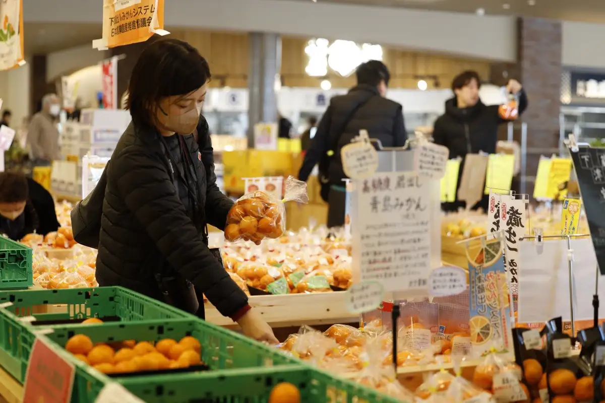
Stay
ホテルルートインGrand海南駅前
Hotel Route Inn Grand Kainan Ekimae
Hotel in Nadaka, Kainan with a large communal bath; 1-minute walk from Kainan Station.
和歌山プリンスイン海南
Wakayama Purinsuin Kainan
Inn in Nichiho, Kainan; 5-minute walk from Jrkainan Station.
うたげＨＡＮＡＲＥ
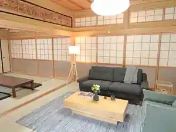
Utage HANARE
シークイン海南
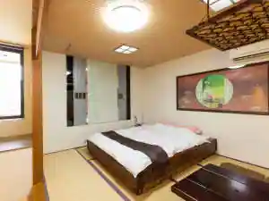
Shikuin Kainan
ホテルルートインＧｒａｎｄ海南駅前
Hotel Route Inn Grand Kainan Ekimae
Hotel in Nadaka, Kainan with breakfast available; 1-minute walk from Kainan Station.
ビジネスホテル かめや
Business Hotel Kameya
Hotel in Nogaminaka, Kainan with business travelers.
Dining
楠本屋
Kusumoto Ya
地魚 さとう
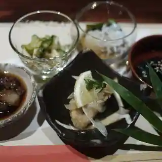
Jizakana Sato
魚盛水産 道の駅海南サクアス店
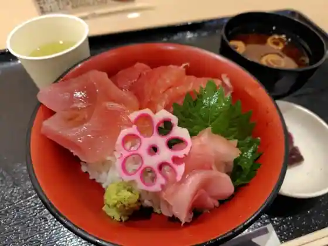
Sakana Jo Suisan Michi No Eki Kainan Sakuasu
海鮮食堂 つなや 海南店
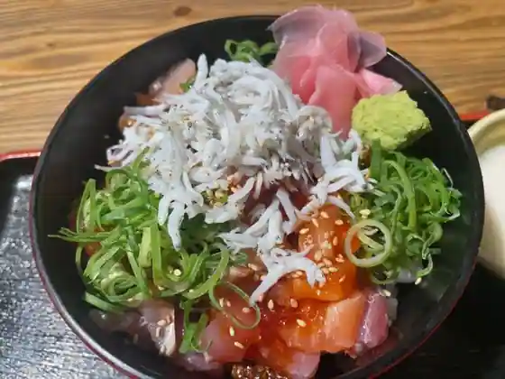
Kaisen Shokudo Tsunaya Kainan
長浜らーめん 海南店
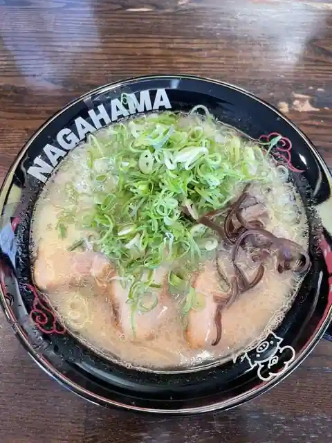
Nagahama Ramen Kainan
洋食堂マキシムカフェ
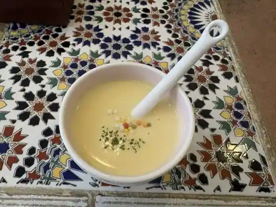
Hiroshi Shokudo Makishimu Cafe
お食事処 萬揚げとん福天
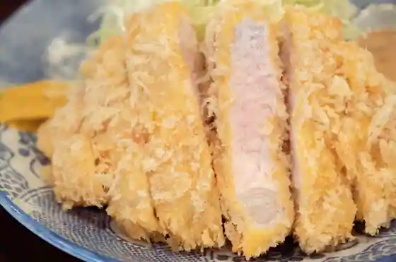
O Shokuji Tokoro Man Age Ton Fuku
富夢想野
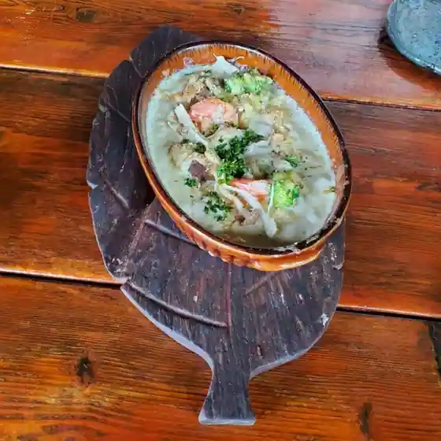
Tomi Muso No
桂花
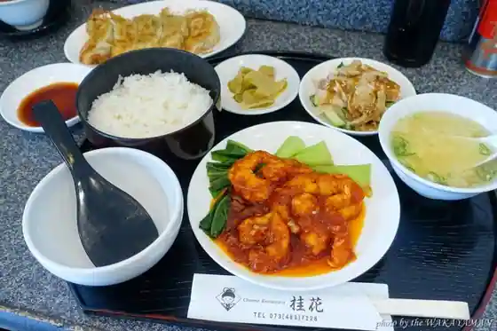
Keika
ずぼら焼き 東浜店
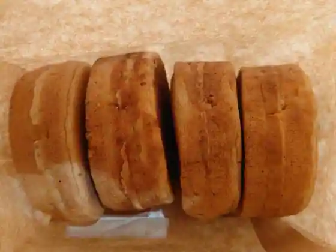
Zubora Yaki Higashihama
炭火焼和めし処 しんぱち食堂 海南店
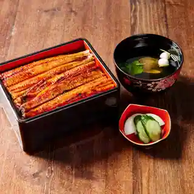
Sumibi Yaki Nagome Shi Tokoro Shinpachi Shokudo Kainan
Kitchen あすか
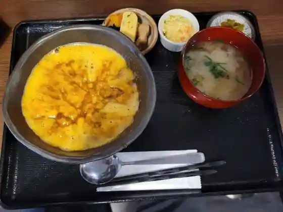
Kitchen Asuka
まるとみ食堂
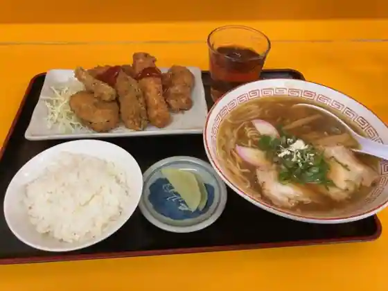
Marutomi Shokudo
ら～めん幕末 海南店
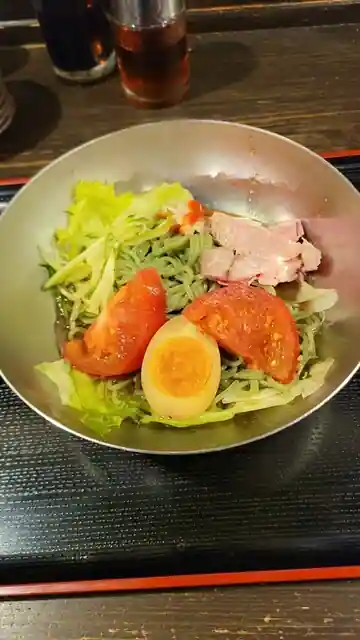
Ra ~ Men Bakumatsu Kainan
SHIMOTSU FRUITS
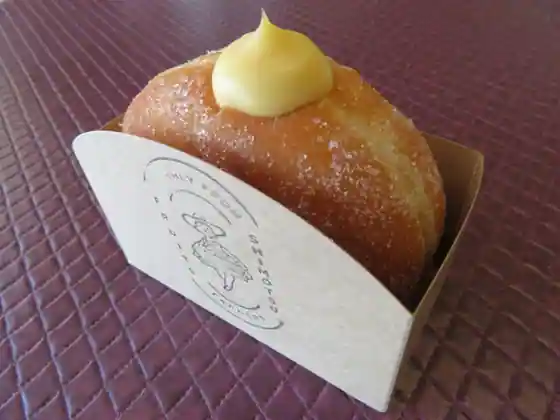
SHIMOTSU FRUITS
道の駅 海南サクアス
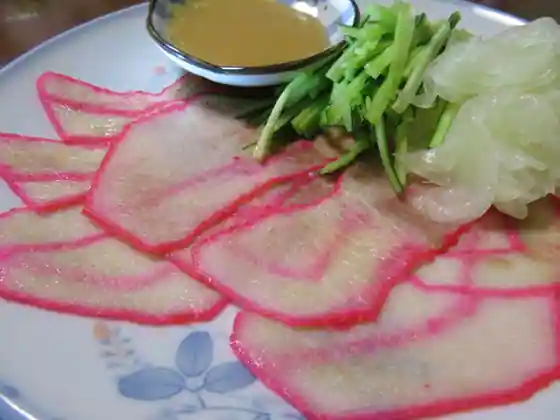
Michi No Eki Kainan Sakuasu
ヴァンサンカン
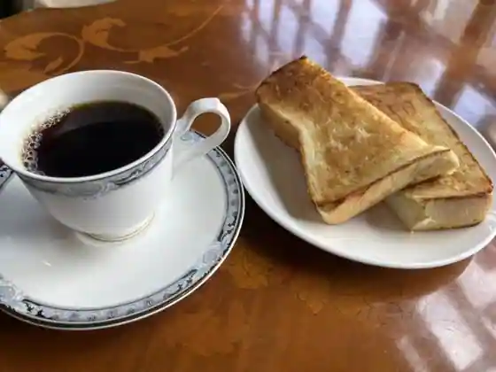
Vansankan
黒江ぬりもの館
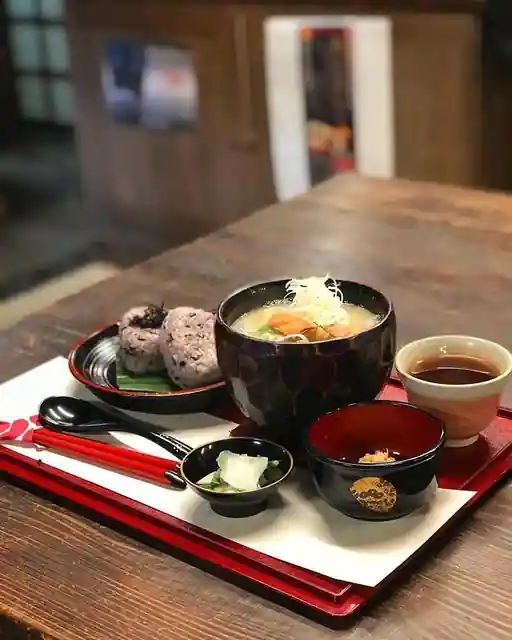
Kuroe Nurimono Kan
肉料理じんせい
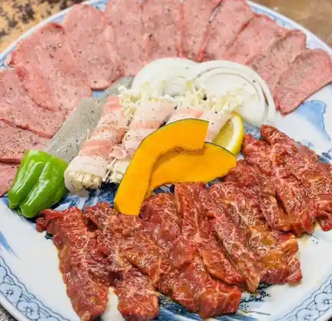
Nikuryori Jinsei
安乍希 海南店
An Nagara Mare Kainan
魚彩酒 うたげ
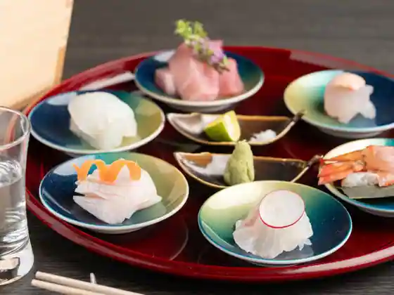
Sakana Sai Sake Utage
ひらおか
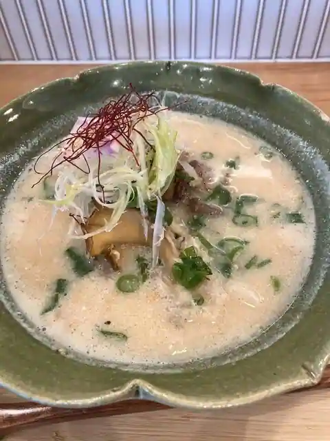
Hiraoka
料亭 美登利
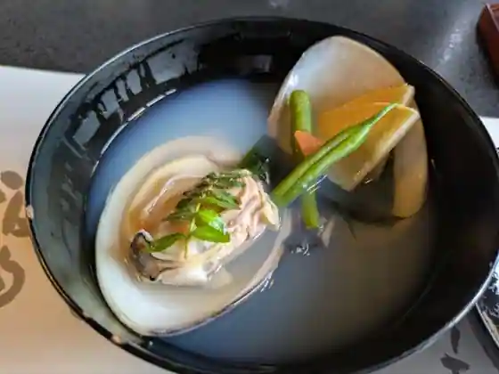
Ryotei Midori
かつ専門 さかもと
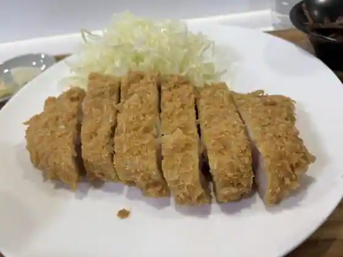
Katsu Senmon Sakamoto
Sights
Kuroe no Streetscape
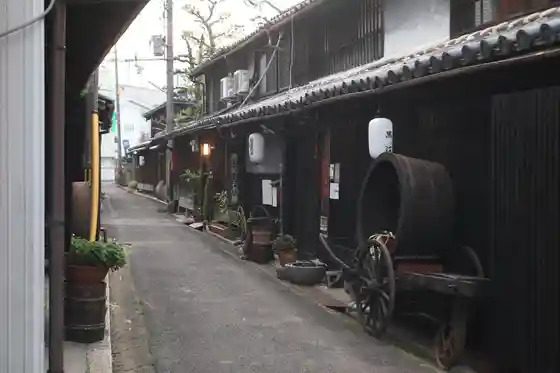
Roadside Station Kainan Sakuasu
Wakayama Prefectural Shizen Museum
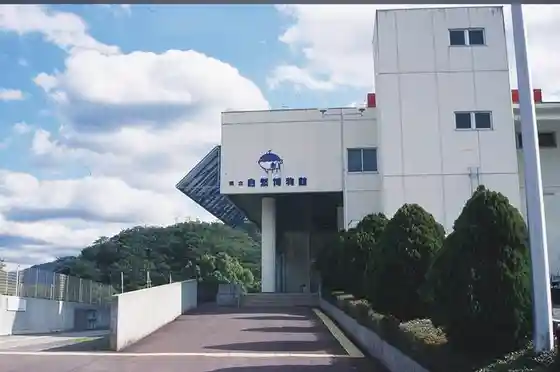
Fujishiro Shrine
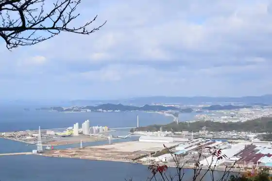
Kon no Ura On Sanso Sono
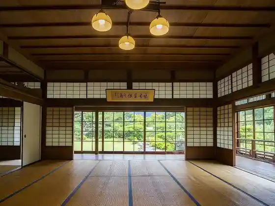
Forest Park Ame Forest
Nagaho Tera
Kame Ike Park
Uga Bu Shrine
Kasuga Shrine